Here are some headlines from the fall of 2008. If you were following the news during this time period, you probably saw stories like these. The first excerpt talks about houses in the United States.
The nation is on track to build fewer homes this year than at any time since the end of World War II, adding to the woes of an economy that analysts said Friday has almost certainly entered a recession.
[…]
David Seiders, chief economist for the group, said builders are being hit by a double whammy from the financial turmoil: It’s harder for them to get loans to pursue new houses, and more difficult to sell those they do build.
[…]Martin Crutsinger, “Fallout from Financial Crisis Hammers Housing,” USA Today, Money, October 17, 2008, accessed June 28, 2011, http://www.usatoday.com/money/topstories/2008-10-16-3784489146_x.htm.
The next excerpt also concerns housing but this time in the United Kingdom.
House prices are set to fall 35 per cent from last year’s peak, as the property slump costs the wider economy almost £50bn as people stop buying homes, economists warned.
With house prices predicted to make their biggest fall in British history by dropping 35 per cent by autumn next year, the associated consumer spending is expected to plunge, they said.
[…]
This is expected to have a huge impact on the wider economy as each house sale triggers around £4,000 in new spending on household goods, on items such as washing machines and other white goods.
[…]
The lack of spending in these areas will hit employment, with some analysts forecasting that the construction sector alone could see a loss of up to 350,000 jobs within the next five years.
[…]Myra Butterworth, “Financial Crisis: House-Price Slump to Cost Economy £50 Billion,” The Telegraph, October 21, 2008, accessed June 28, 2011, http://www.telegraph.co.uk/finance/economics/houseprices/3235741/Financial-crisis-House-price-slump-to-cost-economy-50-billion.html.
Taking these excerpts together, we notice four things: (1) There was a housing slump—fewer houses being bought and sold, and house prices decreasing—in both the United Kingdom and the United States at around the same time. (2) Both are linked to a financial crisis. (3) These slumps affect other parts of the economy. (4) The housing problems lead to job losses.
The next excerpt tells us that the crisis also affected the value of the US dollar.
The great market upheaval of 2008 has stripped 45 percent from the value of global equities, led bank lending to nearly dry up and caused commodity prices to crash from stratospheric heights. And now, paradoxically, it is helping to lift the long-suffering dollar.
[…]See David Jolly, “Global Financial Crisis Has One Beneficiary: The Dollar,” New York Times, October 22, 2008, accessed June 28, 2011, http://www.nytimes.com/2008/10/22/business/worldbusiness/22iht-dollar.4.17174760.html.
This excerpt tells us that the financial crisis has also affected other prices in the economies of the world. The price of equities—shares in companies—decreased, as did the price of goods such as basic minerals (copper and tin, for example) and basic foods (rice and coffee, for example). But even as these items became less valuable, the US dollar became more valuable. The price of the US dollar increased.
The Chinese economy was also affected by the crisis:
China’s agricultural products exports rose 9.8 percent year-on-year in 2008 to $40.19 billion, the General Administration of Customs said on Wednesday.
According to the statistics, export growth declined 8.2 percentage points from a year earlier. Exports in the last two months of 2008 fell 6.9 percent and 7.2 percent to $3.47 billion and $3.76 billion respectively over the same period of 2007.
Although the country has increased export rebates for some agricultural products and lowered or even canceled the export tax, exports are unlikely to see a quick rebound in the near future. Poor overseas demand and falling prices in the international market amid the financial crisis, as well as the increasing distrust in China’s food quality are likely to stifle export growth, the General Administration of Customs said.
[…]See Tong Hao, “Agricultural Products Export Growth Slows Down in 2008,” China Daily, February 11, 2009, accessed June 28, 2011, http://www.chinadaily.com.cn/bizchina/2009-02/11/content_7467089.htm.
The excerpt tells us that China’s exports of agricultural products have been growing rapidly, reaching a growth rate of nearly 10 percent in 2008. But they had been growing even faster in the previous year. The effects of the financial crisis and the economic downturn are clear: the amount of exports decreased at the end of 2008 (and in fact fell throughout 2009 as well).
We have shown a few headlines about the impact of the 2008 financial crisis. We could have picked thousands of others. For example, if you enter into a search engine the terms financial crisis and XYZ, where XYZ is just about any product or international currency, you will probably find dozens, perhaps hundreds, of articles. The financial crisis of 2008 affected just about every market—all around the world.
Our task in this chapter is certainly not to fully understand these events. Our goals here are much more modest. First, we want to develop the supply-and-demand framework—perhaps the most basic tool in economics—to understand how an event affecting some good or service leads to changes in the price of that good or service as well as changes in the quantity that is bought and sold. Second, we want to explore some of the ways in which different markets in the economy are linked, for linkages across markets are among the most important features of macroeconomic analysis. The financial crisis is a good illustration because this single event affected so many markets.
Understanding the sources and consequences of changing prices and quantities in the economy is one of the key tasks of an economist. There is an almost endless list of such analyses in economics. In fact, most of the applications in this textbook ultimately come down to understanding, explaining, and predicting changes in prices and quantities. The two questions that motivate this chapter are as follows:
What determines price and quantity in a market?
How are markets interconnected?
The story of the crisis of 2008 is fascinating and worth understanding in some detail. We begin with the basics of supply and demand, looking at a single market—the market for houses. We explain how the equilibrium price and quantity in this market are determined, which allows us to understand why the price of housing changes. This is a first step to understanding the crisis of 2008 because the housing market was central to that story.
The story began in the housing market but did not end there. It spread across the economy and across the world. Hence we next look at three significant markets in the economy: the labor market, the credit market, and the foreign exchange market. Understanding how these three markets work is necessary for a good understanding of macroeconomics. We use these markets to provide more illustrations of supply and demand in action. Finally, we look at how markets are linked together to see how what might have seemed like a minor problem in one market turned into a cataclysmic event for the world’s economies.
Throughout this chapter, we use the term “the crisis of 2008” as shorthand, but the first signs of the crisis emerged well before that year, and the effects of the crisis are still being felt several years later. The crisis was a complex event, and right now, at the beginning of your studies of macroeconomics, we are not yet ready to delve deeply into a detailed analysis of those events. We return to the crisis in Chapter 30 "The Global Financial Crisis", which is a capstone chapter that brings together most of the tools of macroeconomics from this book.
After you have read this section, you should be able to answer the following questions:
The first two articles we quoted from made it clear that the housing market was heavily affected by the financial crisis. More than that, it was where the crisis began—and so it is where we begin our story.
We start with the market for new homes, which are part of real gross domestic product (real GDP). (The buying and selling of existing homes is not counted in GDP.) New homes are supplied by construction firms and demanded by families wishing to live in a new home. New homes are also bought by speculators who purchase houses in the hope that they can resell them for a higher price in the future.
Toolkit: Section 31.9 "Supply and Demand"
Supply and demandA framework that explains and predicts the equilibrium price and equilibrium quantity of a good. is a framework we use to explain and predict the equilibrium price and quantity of a good. A point on the market supply curve shows the quantity that suppliers are willing to sell for a given price. A point on the market demand curve shows the quantity that demanders are willing to buy for a given price. The intersection of supply and demand determines the equilibrium price and quantity that will prevail in the market.
The toolkit contains a presentation of supply and demand that you can use for reference purposes in this and the following chapters.
The supply-and-demand framework applies to the case that economists call a competitive marketA market that satisfies two conditions: (1) there are many buyers and sellers, and (2) the goods the sellers produce are perfect substitutes.. A market is said to be competitive, or, more precisely, to exhibit perfect competition, under two conditions:
In a competitive market, buyers and sellers take the price as given; they think their actions have no effect on the price in the market.
The market demand for housing is shown in Figure 19.1 "The Market Demand for Houses". We call this the market demand curveThe number of units of a good or a service demanded at each price. because it reflects the choices of the many households in the economy. In macroeconomics, we typically look at markets at this level of aggregation and do not worry much about the individual decisions that underlie curves such as this one.
Figure 19.1 The Market Demand for Houses
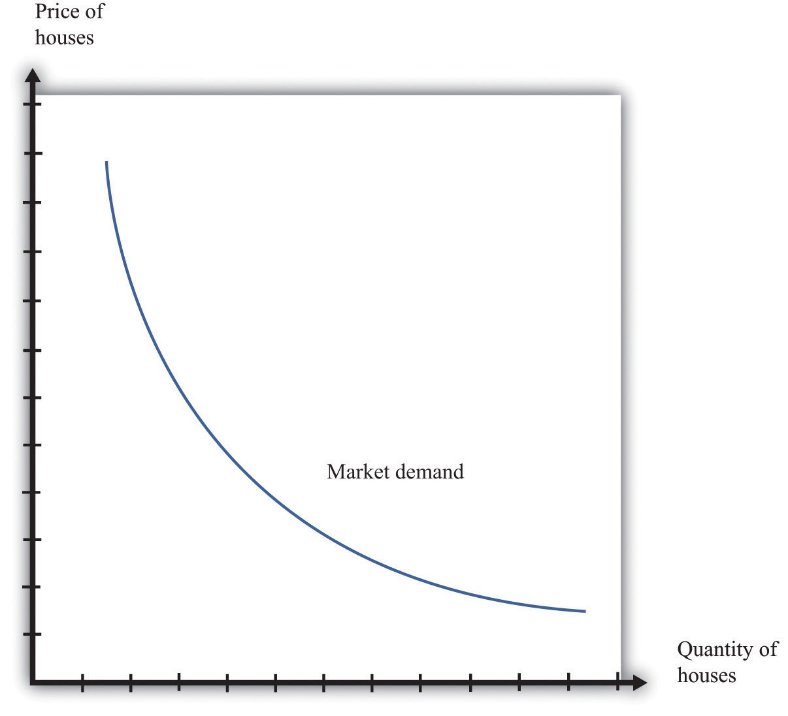The market demand curve shows the quantity of houses demanded at each price.
As the price of housing decreases, the quantity demanded increases. This is an example of the law of demand, which derives from two effects:
In the case of the market for housing, the first of these is more important. Most people own either zero houses or one house. As houses become cheaper, more people decide that they can afford a house, so the quantity demanded increases. A few people might decide to buy an additional house, but they would presumably be in the rich minority. For other goods, such as chocolate bars or shoeshines, the second effect is more important: as price decreases, people increase the quantity that they buy.
When we draw a demand curve, we are varying the price but holding everything else fixed. In particular, we hold fixed the level of income, the prices of other goods and services in the economy, and the tastes of households. If these other factors change, then the market demand curve will shift—that is, the quantity demanded will change at each price.
A leftward shift of the market demand curve for houses, as indicated in Figure 19.2 "A Shift in the Market Demand Curve", could be caused by many factors, including the following:
Figure 19.2 A Shift in the Market Demand Curve
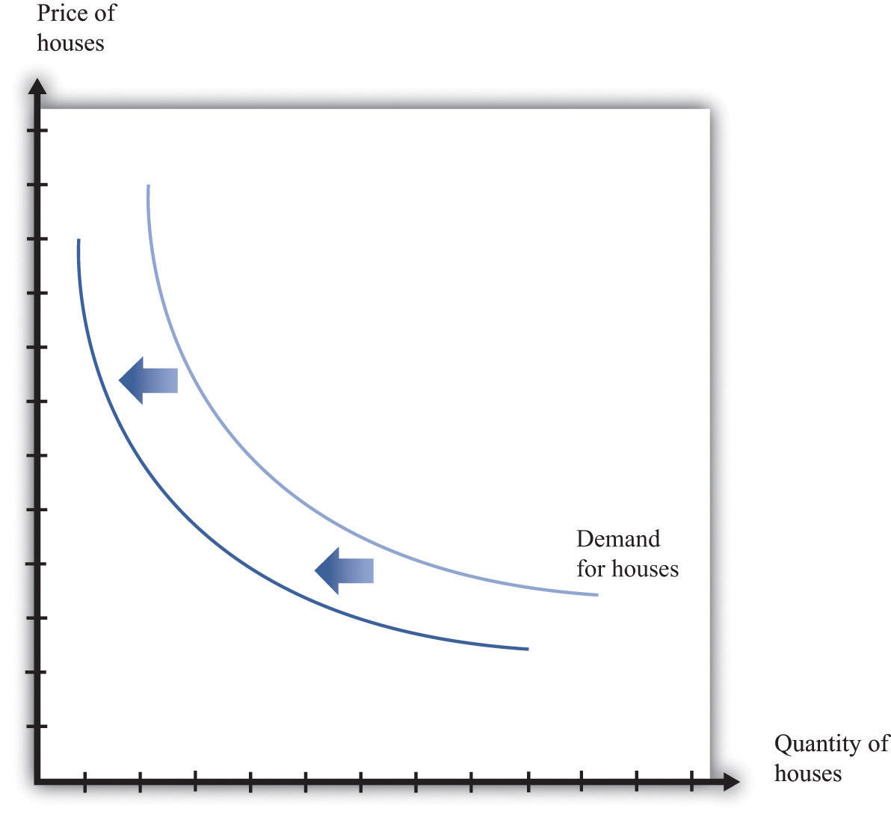If there is a decrease in demand for houses, then fewer houses are demanded at each price. The demand curve shifts leftward.
The counterpart to the market demand curve is the market supply curveThe number of units of a good or a service supplied at each price., which is obtained by adding together the individual supply curves in the economy. The supply curve slopes upward: as price increases, the quantity supplied to the market increases. As with demand, there are two underlying effects.
Figure 19.3 The Market Supply of Houses

The market supply curve shows the quantity of houses supplied at each price. It has a positive slope: as the price of houses increases, the number of houses supplied to the market increases as well.
When we draw a supply curve, we again vary the price but hold everything else fixed. A change in any other factor will cause the market supply curve to shift. A leftward shift of the market supply curve for houses, as indicated in Figure 19.4 "A Shift in Supply of Houses", could be caused by many factors, including the following:
Figure 19.4 A Shift in Supply of Houses
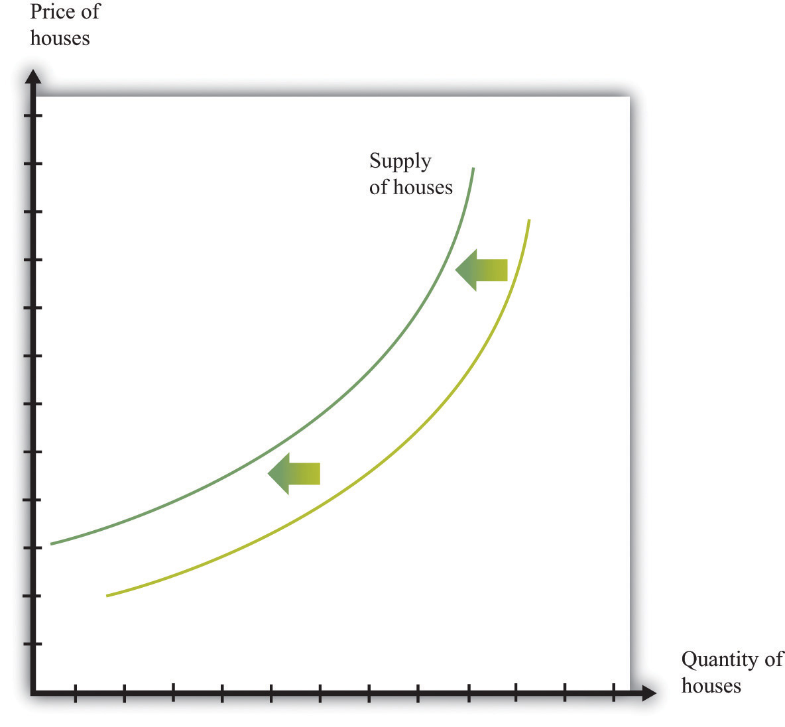If there is a decrease in supply of houses, then fewer houses are supplied at each price. The supply curve shifts leftward.
We now put the market demand and market supply curves together to give us the supply-and-demand picture in Figure 19.5 "Market Equilibrium". The point where supply and demand meet is the equilibrium in the market. At this point, there is a perfect match between the amount that buyers want to buy and the amount that sellers want to sell.
Toolkit: Section 31.9 "Supply and Demand"
Equilibrium in a market refers to an equilibrium price and an equilibrium quantity and has the following features:
Figure 19.5 Market Equilibrium
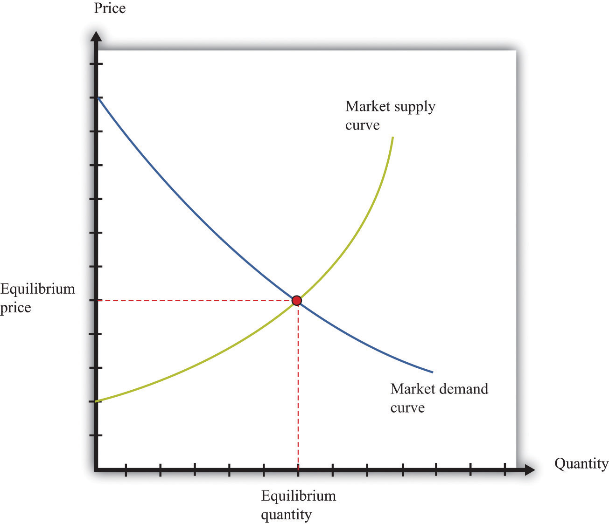In a competitive market, equilibrium price and quantity are determined by the intersection of the supply and demand curves.
We speak of equilibrium because there is a balancing of the forces of supply and demand in the market. At the equilibrium priceA price such that the quantity supplied equals the quantity demanded., suppliers of the good can sell as much as they wish, and demanders of the good can buy as much of the good as they wish. There are no disappointed buyers or sellers. Because the demand curve has a negative slope and the supply curve has a positive slope, supply and demand will cross once, and both equilibrium price and equilibrium quantityThe quantity supplied and demanded at the equilibrium price. will be positive.
Table 19.1 "Market Equilibrium: An Example" provides an example of market equilibrium. It gives market supply and market demand for four different prices. Equilibrium occurs at a price of $100,000 and a quantity of 50 new houses.
Table 19.1 Market Equilibrium: An Example
| Price ($) | Market Supply | Market Demand |
|---|---|---|
| 10,000 | 5 | 95 |
| 50,000 | 25 | 75 |
| 100,000 | 50 | 50 |
| 200,000 | 100 | 0 |
Economists typically believe that a perfectly competitive market is likely to reach equilibrium. The reasons for this belief are as follows:
Pictures like Figure 19.5 "Market Equilibrium" are useful to help understand how the market works. Keep in mind, however, that firms and households in the market do not need any of this information. This is one of the beauties of the market. All an individual firm or household needs to know is the prevailing market price. All the coordination occurs through the workings of the market.
After you have read this section, you should be able to answer the following questions:
A driving factor in the crisis of 2008 was a decrease in the price of new housing. We can use our supply-and-demand tool to help us understand that. We use the framework to make predictions about the effects of events on economic outcomes. More precisely, economists predict the effects of exogenous events on equilibrium prices and quantities.
Toolkit: Section 31.16 "Comparative Statics"
An exogenousSomething that comes from outside a model and is not explained in our analysis. variable is something that comes from outside a model and is not explained in our analysis. An endogenousSomething that is explained within our analysis. variable is one that is explained within our analysis. When using the supply-and-demand framework, price and quantity are endogenous variables; everything else is exogenous.
The following is a typical account of the housing market crisis in 2008:
The immediate cause or trigger of the crisis was the bursting of the United States housing bubble which peaked in approximately 2005–2006. High default rates on “subprime” and adjustable rate mortgages (ARM), began to increase quickly thereafter. An increase in loan incentives such as easy initial terms and a long-term trend of rising housing prices had encouraged borrowers to assume difficult mortgages in the belief they would be able to quickly refinance at more favorable terms. […] However, once interest rates began to rise and housing prices started to drop moderately in 2006–2007 in many parts of the U.S., refinancing became more difficult. Defaults and foreclosure activity increased dramatically as easy initial terms expired, home prices failed to go up as anticipated, and ARM interest rates reset higher. Falling prices also resulted in 23% of U.S. homes worth less than the mortgage loan by September 2010, providing a financial incentive for borrowers to enter foreclosure.“Subprime Mortgage Crisis,” Wikipedia, accessed June 28, 2011, http://en.wikipedia.org/wiki/Subprime_mortgage_crisis.
This quote identifies two forces that influenced the demand for housing in 2007–8. The first was expectations of future home prices. One of the gains from owning a house is the possibility that you can sell it at a higher price in the future. Prior to 2007, there had been a fairly consistent tendency for house prices to increase, but the quote seems to indicate that people began to doubt that this trend would continue. As a consequence, the demand for new homes decreased. The second force in the market for new housing was the availability of credit. Most households buy a new home by obtaining a loan (a mortgage) to cover some of the price of the house. During 2007 and 2008, it became increasingly difficult to obtain a mortgage. This was in contrast to a few years earlier when lending standards were easier, and many households easily qualified for mortgages.
These forces affect market demand. The anticipation of lower home prices in the future implies that fewer individuals will choose to buy a home now. Further, if financing is more expensive, then less housing will be purchased. These effects operate given the current price of housing. That is, at any given current price of houses, a smaller quantity of houses is demanded. The market demand curve shifts leftward: at each given price, market demand is lower.
The shift in demand is shown in Figure 19.6 "A Decrease in Demand for Housing". Once the demand curve shifts, the market for new houses is no longer in equilibrium. At the original price, there is now an imbalance between supply and demand: at that price, buyers want to purchase fewer homes than sellers wish to sell. To restore equilibrium in the market, there needs to be a reduction in housing prices and a reduction in the quantity of new houses produced. The decrease in production comes about because the lower price of houses makes suppliers less willing to produce houses for the market. The shift in the demand curve leads to a movement along the supply curve.
Figure 19.6 A Decrease in Demand for Housing
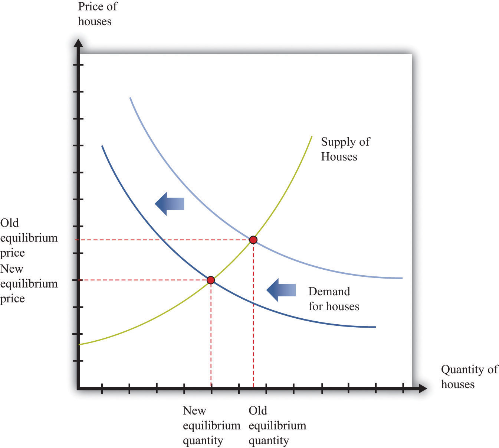A decrease in demand for houses means that the demand curve shifts leftward, leading to a decrease in both the price of houses and the quantity of houses that are produced and sold.
Understanding the distinction between moving along a curve (either supply or demand) and shifting the curve is the hardest part about learning to use the supply-and-demand framework. Journalists and others frequently get confused about this—and no wonder, for it requires practice to learn how to use supply and demand properly.
First, consider the market demand curve. As the price of houses increases, the quantity demanded will decrease. This is a movement along the market demand curve. Changes in anything else—anything other than price—that affects the quantity demanded appears as a shift in the market demand curve. That is, at each given price, the quantity demanded changes.
Analogously, as the price of houses increases, the quantity supplied will increase. This is a movement along the market supply curve. If a change in anything else leads to a change in the quantity supplied, this appears as a shift in the market supply curve. That is, at each given price, the quantity supplied changes.
The example that we just discussed is an illustration of a general technique used by economists for two purposes. First, we use it to explain changes in prices and quantities that we have observed in the past. Second, we use it to predict what will happen to market prices and quantities in the future. The technique is called comparative staticsA technique that allows us to describe how market equilibrium prices and quantities depend on exogenous events..
Toolkit: Section 31.16 "Comparative Statics"
Comparative statics is a technique that allows us to describe how market equilibrium prices and quantities depend on exogenous events. As such, much of economics consists of exercises in comparative statics. In a comparative statics exercise, you must do the following:
The most difficult part of a comparative statics exercise is to determine, from a description of the economic problem, whether it is the supply or demand curve (or both) that shifts. Once you conquer the economics of determining which curve is shifting, then it is a matter of mechanically using the framework to find the new equilibrium. A comparison of the old and new equilibrium points allows you to predict what will happen to equilibrium prices and quantities following an exogenous change.
After you have read this section, you should be able to answer the following questions:
The financial crisis of 2008 began in the housing market. But as the excerpts at the beginning of this chapter make clear, its effects rapidly spread beyond that market. Those excerpts talked of credit, jobs, and the impact of the crisis on foreign countries. We now look at the knock-on effects of the crisis and, in the process, describe three key macroeconomic markets: the credit market, the labor market, and the foreign exchange market.These markets are used in several places in the book. In particular, we look at labor in Chapter 23 "Jobs in the Macroeconomy", and credit and foreign exchange in Chapter 24 "Money: A User’s Guide".
A credit market (or loan market)A market that brings together suppliers of credit, such as households who are saving, and demanders of credit, such as businesses and households who need to borrow. is a market in which credit is extended by lenders to borrowers. These credit arrangements, also called loans, are a specific kind of contract. A simple credit contract specifies three things: (1) the amount being borrowed, (2) the date(s) at which repayment must be made, and (3) the amount that must be repaid.Of course, since credit contracts are legal documents, lots of other details will be written into the contract as well. Here we focus on the most important features of the contract.
To be specific, suppose you go to your bank to inquire about a loan for $1,000, to be repaid in one year. In this case the lender—the bank—is a supplier of credit, and the borrower—you—is a demander of credit. The higher is the repayment amount, the more attractive this loan contract will look to the bank. Conversely, the lower is the repayment amount, the more attractive this loan contract looks to you. The relationship between the current price and the future repayment can be summarized in a single number, known as the nominal interest rateThe number of additional dollars that must be repaid for every dollar that is borrowed..
Toolkit: Section 31.24 "The Credit (Loan) Market (Macro)"
The nominal interest rate is the number of additional dollars that must be repaid for every dollar that is borrowed. It is generally specified in annual terms; that is, it is the amount that must be paid per year.
For the one-year loan we are considering,
For example, suppose the repayment amount is $1,050. Then the left-hand side of this expression is 1,050/1,000 = 1.05. It follows that the nominal interest rate is 0.05, or 5 percent.
Financial markets are typically good examples of competitive markets. Loans are homogeneous, and there are potentially many buyers and sellers. So if we imagine that there are lots of banks that might be willing to supply credit, and lots of people like you who might demand credit, then we could draw supply and demand curves as in Figure 19.7 "A Market for $1,000 Loans". In this case, the units on the quantity axis are one-year $1,000 loans. The price on the vertical axis is the interest rate, which tells us the amount of the repayment per dollar loaned. The higher the repayment is, the more willing are banks to supply credit, so the supply curve slopes upward. The higher the repayment, the less willing are people to take out these loans, and so the demand curve slopes downward. If the repayment price were acceptable to you, you would “buy” one of these $1,000 loans. The equilibrium nominal interest rate is shown at the crossing of supply and demand.
Figure 19.7 A Market for $1,000 Loans
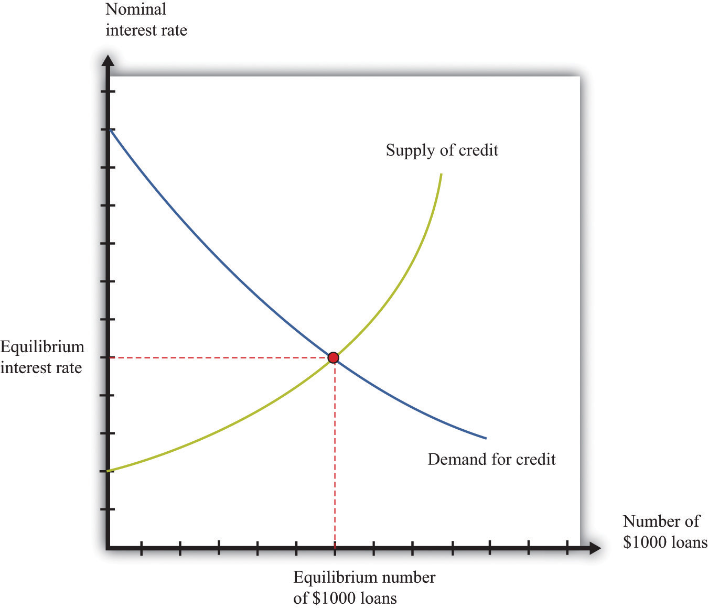In this credit market, lenders offer $1,000 loans to borrowers. The equilibrium nominal interest rate is where the quantity of credit supplied equals the quantity of credit demanded.
At the height of the financial crisis of 2008, credit became much more expensive—that is, interest rates increased. Why? As housing prices collapsed in the United States and elsewhere, a substantial number of mortgage loans became nonperforming. This means that borrowers were unable or unwilling to repay these loans and defaulted on them instead. In addition, because banks had sold and resold some of these mortgage loans, it was hard to identify which loans would be repaid and which would not. Some financial institutions that were holding a lot of bad loans went bankrupt, and others were in danger of going under as well.
As a consequence, lenders became much more cautious about the types of loans they made—not only in mortgage markets but also throughout the economy. They were more careful about evaluating the likelihood that borrowers would repay their loans. This led to a reduction in the market supply of credit. The reduced supply of loans in the mortgage market was particularly acute. This appears as a leftward shift of the supply curve in Figure 19.8 "A Reduction in Supply in the Mortgage Market". Nominal interest rates increased, and the quantity of mortgages extended decreased. (The full story of what happened in credit markets is more complicated because central banks around the world also took actions to offset these changes and keep interest rates low.)
Figure 19.8 A Reduction in Supply in the Mortgage Market
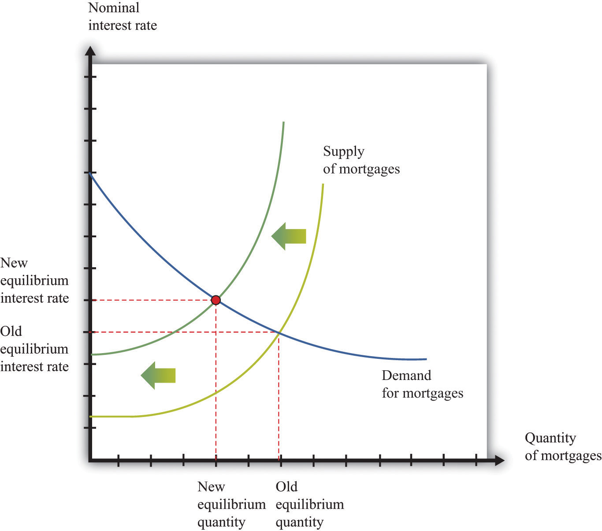As lenders became more cautious about making loans, the supply of mortgage loans shifted leftward. Interest rates in the economy increased, and the quantity of mortgages decreased.
Mortgage rates and other interest rates are based on underlying dollar amounts; the interest rate tells you how many dollars borrowers must pay to lenders for each dollar that they borrow. Because they are based on dollar amounts, they are called nominal interest rates. When you see a mortgage rate quoted by a bank or a rate on a credit card, it is a nominal rate.
The nominal rate does not tell us the true cost of borrowing, or return on lending, when there is inflation in an economy. For example, suppose that the nominal interest rate is 5 percent, but inflation is also 5 percent. If you took out a $1,000 loan, you would have to pay back $1,050 next year. But that $1,050 would buy exactly the same amount of real gross domestic product (real GDP)A measure of production that has been corrected for any changes in overall prices. next year as $1,000 does this year—that is what it means to have 5 percent inflation. So, in terms of actual goods and services, you have to pay back the same amount that you borrowed. The real interest rateThe rate of return specified in terms of goods, not money.—that is, the interest rate corrected for inflation—is zero.
Toolkit: Section 31.8 "Correcting for Inflation"
The Fisher equationA formula for converting from nominal interest rates to real interest rates: the real interest rate equals the nominal interest rate minus the inflation rate. is a formula for converting from nominal interest rates to real interest rates, as follows:
real interest rate ≈ nominal interest rate − inflation rate.The real interest rate gives the true cost of borrowing and lending; it is the real interest rate that actually matters for the decisions of savers and borrowers.We derive the Fisher equation more fully in Chapter 24 "Money: A User’s Guide". That doesn’t mean, by the way, that our previous two diagrams were incorrect because they used the nominal interest rate. Provided that the inflation rate doesn’t change, a comparative static exercise using the nominal interest rate will give you exactly the same conclusion as one using the real interest rate.
We have described a market for a particular kind of loan, but more generally we know that there are all kinds of different ways in which credit is offered in an economy. Households borrow from banks to buy houses or cars. Households and firms make purchases using credit cards. Firms borrow from financial institutions to buy new equipment. The government borrows to finance its spending, and so on. There is a very large number of credit markets in the economy, each offering a different kind of credit, and each with its own equilibrium interest rate.
These different credit markets are linked because most households and firms buy or sell in more than one market. Financial institutions in particular trade in large numbers of different credit markets. For much of what we do in macroeconomics, however, the distinctions among different kinds of credit are not critical, and it is sufficient to imagine a single aggregate credit market and a single real interest rate.In Chapter 24 "Money: A User’s Guide", we look in more detail at the different kinds of credit—and the associated different interest rates—that we see in an economy. We also investigate in more detail how these markets are linked together. Figure 19.9 "The Aggregate Credit Market" shows the credit market for an entire economy. This is the market where all the savers in the economy bring funds to financial intermediaries, who then lend those funds to firms, households, and governments. The supply of credit increases as the interest rate increases. As the interest rate increases, other things being equal, households will generally save more and thus supply more to the credit market. The quantity of credit demanded decreases as the interest rate increases. When it is expensive to borrow, households and firms will borrow less.
Figure 19.9 The Aggregate Credit Market
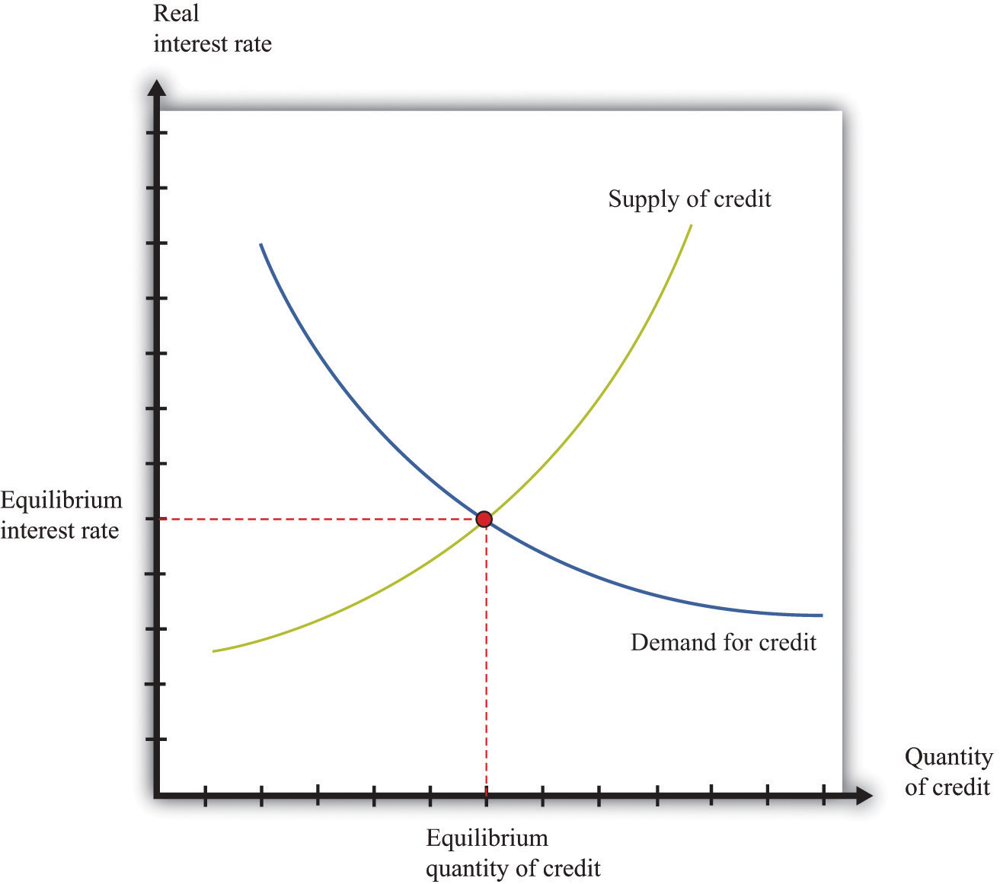In the credit market, the equilibrium real interest rate is where the quantity of credit supplied equals the quantity of credit demanded.
Toolkit: Section 31.24 "The Credit (Loan) Market (Macro)"
The credit market brings together suppliers of credit, such as households who are saving, and demanders of credit, such as businesses and households who need to borrow. The real interest rate is the price that brings demand and supply into balance. At the equilibrium interest rate, the amount of credit supplied and the amount of credit demanded are equal.
Two of the most important players in the credit market are the government and the monetary authority. If the US federal government borrows more, this shifts the demand for credit outward and increases the interest rate. (Notice that the government is a big player in this market, so its actions affect the interest rate.) The monetary authority, meanwhile, buys and sells in credit markets to influence interest rates in the economy.We study the actions of the Federal Reserve and other monetary authorities in Chapter 25 "Understanding the Fed". In the 2008 crisis, the Federal Reserve Bank, which is the monetary authority in the United States, took many actions to increase the supply of credit and ease the problems in the credit market.
The story about the housing market in the United Kingdom at the beginning of this chapter contained some dire predictions about employment:
The lack of spending in these areas will hit employment, with some analysts forecasting that the construction sector alone could see a loss of up to 350,000 jobs within the next five years.
To understand this prediction, we need to look at another market—the labor marketThe market that brings together households who supply labor services and firms who demand labor as an input into the production process..
In the markets for goods and services, the supply side usually comes from firms, and the demand side comes from households. In the labor market, by contrast, firms and households switch roles: firms demand labor, and households supply labor. Supply and demand curves for construction workers are shown in Figure 19.10 "Equilibrium in the Market for Construction Workers". Here the price of labor is the hourly real wageThe nominal wage (the wage in dollars) divided by the price level. that is paid to workers in this industry.
Toolkit: Section 31.3 "The Labor Market"
The real wage is the wage corrected for inflation. To obtain the real wage, simply divide the wage in dollars—the nominal wage—by the price level:
The individual demand for labor by firms comes from the fact that workers’ time is an input into the production process. This demand curve obeys the law of demand: as the real wage increases, the quantity of labor demanded decreases. At a higher real wage, a firm will demand less labor services (by hiring fewer workers and/or reducing the hours of workers) and will respond to the higher labor cost by reducing production.
Workers care about the real wage because it tells them how much they can obtain in terms of goods and services if they give up some of their time. The supply of labor comes from households who allocate their time between work and leisure activities. In Figure 19.10 "Equilibrium in the Market for Construction Workers", the supply of labor is upward sloping. As the real wage increases, households supply more labor because (1) higher wages induce people to work longer hours, and (2) higher wages induce more people to enter the labor force and look for a job.
Figure 19.10 Equilibrium in the Market for Construction Workers
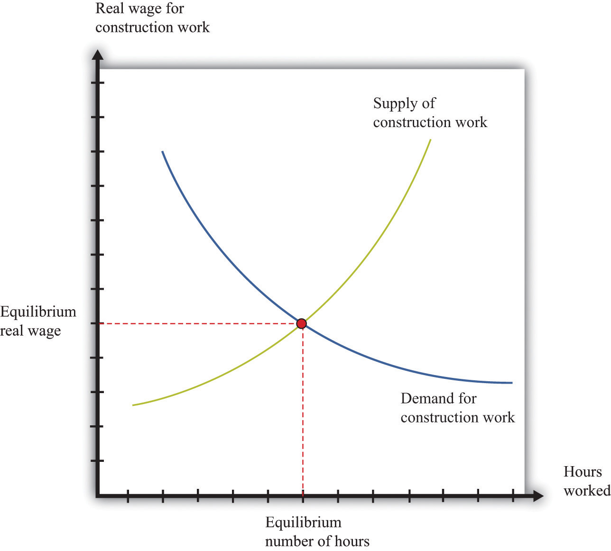This picture shows the supply of and demand for hours of work in the construction industry.
Figure 19.11 A Decrease in Demand for Construction Workers
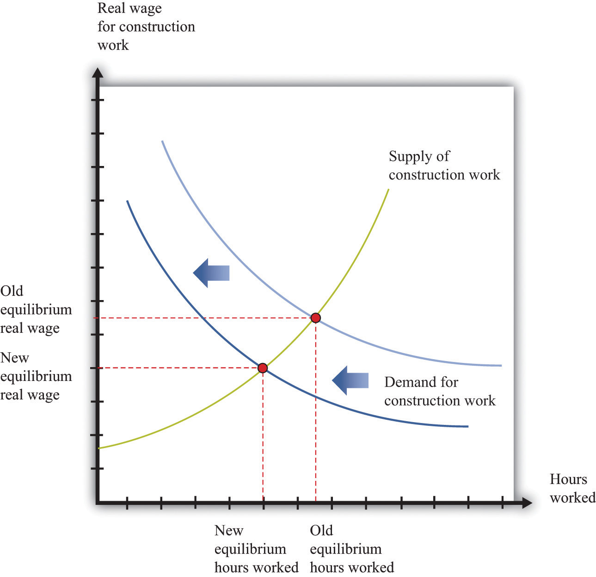Because builders are building fewer houses, they hire fewer construction workers, causing the labor demand curve to shift leftward.
In the United Kingdom, there was a leftward shift in demand for housing (just like we showed in Figure 19.6 "A Decrease in Demand for Housing"). The response of homebuilders to such a shift is to build fewer homes and, therefore, demand less labor. As a result, there is a leftward shift in the demand curve for construction workers. Based on the supply-and-demand framework, we predict both lower wages and a reduction in employment in the construction sector of the economy, as shown in Figure 19.11 "A Decrease in Demand for Construction Workers".
Similar reductions in demand for labor occurred in the United States and many other countries around the world. There was a consequent reduction in employment and an increase in unemployment. The crisis was not restricted just to financial markets, in other words. It had consequences for the “real” economy as well.
Because there are many different jobs and many different kinds of workers, there is no single labor market and no single wage. Instead, you can think of there being many different labor markets just as there are many different credit markets. Like different credit markets, different labor markets are linked: households may participate in more than one labor market, and most firms purchase many different kinds of labor. As with the credit market, we sometimes look at the market for a particular kind of labor and the economy as a whole. Most of the time in macroeconomics, it is sufficient to think about an aggregate labor market, as shown in Figure 19.12 "Equilibrium in the Labor Market".In Chapter 23 "Jobs in the Macroeconomy", we pay more attention to the fact that workers and jobs are not all identical. As the real wage increases, households supply more hours, and more households participate in the labor market. For both of these reasons, as the real wage increases, the quantity of labor supplied also increases. Labor demand comes from firms. As the real wage increases, the cost of hiring extra labor increases, and firms demand fewer labor hours. That is, the firm’s labor demand curve is downward sloping.
Toolkit: Section 31.3 "The Labor Market"
The labor market is the market in which labor services are traded. The supply of labor comes from households. At the equilibrium real wage, the number of hours supplied and the number of hours demanded are equal.
Figure 19.12 Equilibrium in the Labor Market
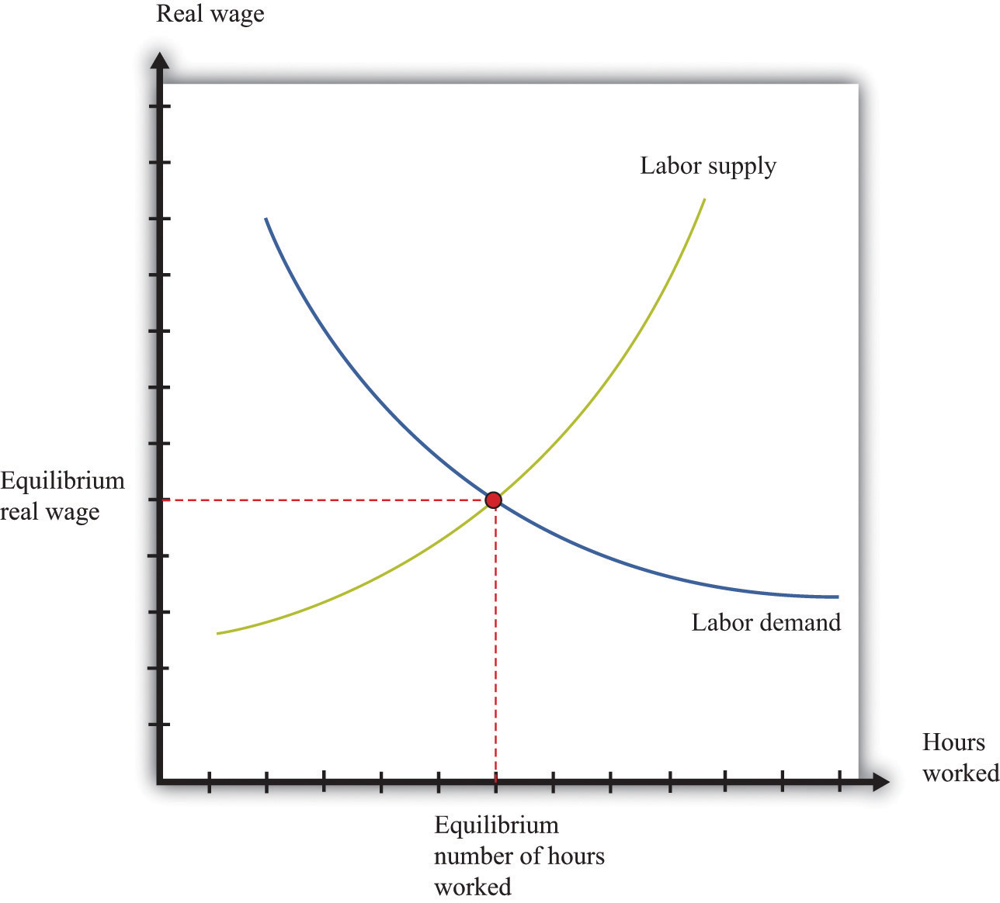The labor market is the market in which firms hire workers. The equilibrium real wage is the price where the quantity of labor supplied equals the quantity of labor demanded.
The excerpts at the beginning of this chapter reveal that the financial crisis also impacted other countries. For example, we included an excerpt about the effects of the crisis on the value of a dollar and also an excerpt about exports from China. We could have also cited effects of the crisis on other countries: for example, India’s information technology sector and Canada’s lumber industry were both affected. To understand the transmission of the crisis to other countries, we have to learn about another market—the market where different currencies are bought and sold.
If you travel abroad, you must acquire the currency used in that region of the world. For example, if you take a trip to Finland, Russia, and China, you will buy euros, rubles, and yuan along the way. To do so, you need to participate in various foreign exchange marketsThe place where suppliers and demanders of currencies meet and trade..
Toolkit: Section 31.20 "Foreign Exchange Market"
The foreign exchange market is the market where currencies are traded. The price in this market is the price of one currency in terms of another and is called the nominal exchange rateThe price of one currency in terms of another..
Dollars are supplied to foreign exchange markets by US households, firms, and governments who wish to purchase goods, services, or financial assets that are denominated in the currency of another economy. For example, if a US auto importer wants to buy a German car, it must sell dollars and buy euros. As the price of a dollar increases, the quantity supplied of that currency will increase.
Foreign currencies are supplied by foreign households, firms, and governments that wish to purchase goods, services, or financial assets (such as stocks or bonds) denominated in the domestic currency. For example, if a Canadian bank wants to buy a US government bond, it must sell Canadian dollars and buy US dollars. The law of demand holds: as the price of a dollar increases, the quantity of that currency demanded decreases.
Figure 19.13 "Equilibrium in the Foreign Exchange Market Where Dollars and Euros Are Exchanged" shows an example of a foreign exchange market: the market in which euros are bought with and sold for US dollars. The horizontal axis shows the number of euros bought and sold on a particular day. The vertical axis shows the exchange rate—the price of a euro in dollars. This market determines the dollar price of euros just like the gasoline market determines the dollar price of gasoline.
Figure 19.13 Equilibrium in the Foreign Exchange Market Where Dollars and Euros Are Exchanged
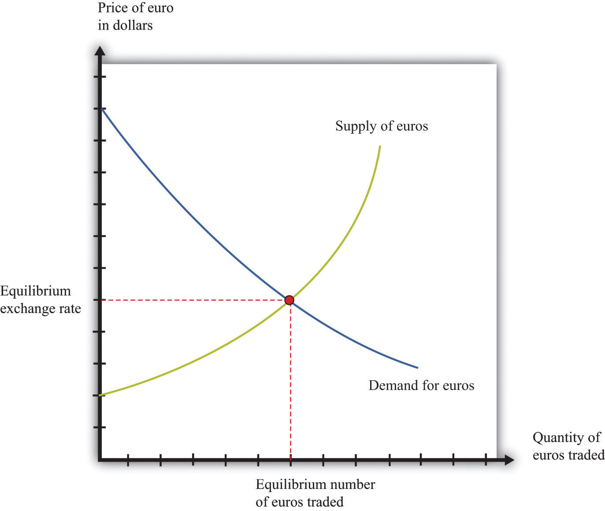Currencies are traded in foreign exchange markets, such as the market shown here in which dollars and euros are exchanged. The equilibrium exchange rate is the price where the quantity of euros supplied equals the quantity of euros demanded.
On the supply side, there are households and firms in Europe who want to buy US goods and services. To do so, they need to buy dollars and, therefore, must supply euros to the market. This supply of euros need not come only from European households and firms. Anyone holding euros is free to sell them in this market. On the demand side, there are households and firms who are holding dollars and who wish to buy European goods and services. They need to buy euros.
There is another source of the demand for and the supply of different currencies. Households and, more importantly, firms often hold assets denominated in different currencies. You could, if you wish, hold some of your wealth in Israeli government bonds, in shares of a South African firm, or in Argentine real estate. But to do so, you would need to buy Israeli shekels, South African rand, or Argentine pesos. Likewise, many foreign investors hold US assets, such as shares in Dell Inc. or debt issued by the US government. Thus the demand for and the supply of currencies are also influenced by the asset choices of households and firms. In practice, banks and other financial institutions conduct the vast majority of trades in foreign exchange markets.
As well as households and firms, monetary authorities also participate in foreign exchange markets. For example, the US Federal Reserve Bank monitors the value of the dollar and may even intervene in the market, buying or selling dollars in order to influence the exchange rate.
One of the articles we used to open this chapter dealt with changes in the value of the dollar in the fall of 2008. The article pointed out that the dollar was getting stronger relative to other currencies, such as the euro. This means that the price of a dollar in euros was increasing or, equivalently, the price of a euro in dollars was decreasing. In fact, the euro price of a dollar was about 0.67 in late September 2008; the price increased to nearly 0.81 by late October and then decreased again through December 2008.
We can use the foreign exchange market to understand these events. Figure 19.14 "Comparative Statics in the Euro Market" shows the dollar market for euros once again. The increase in the value of the dollar discussed in the article is seen here as a rightward shift in the supply of euros, which decreases the value of the euro and—equivalently—increases the value of the dollar.
Figure 19.14 Comparative Statics in the Euro Market
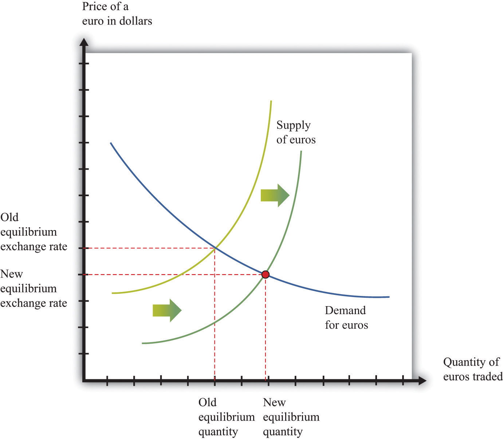The rightward shift in the supply of euros leads to a decrease in the price of a euro in terms of dollars.
There are two consequences of this shift in the supply curve. First, the shift in supply decreases the dollar price of the euro. So people in the United States who are planning to visit, say, France will find that they can obtain more euros for a given amount of dollars. Second, the quantity of euros actually bought and sold is higher. This is not inconsistent with the lower dollar price of a euro since the supply curve shifts along the demand curve for euros.
We sometimes look at an individual exchange rate (e.g., dollar-euro) by thinking of the market where dollars are exchanged for euros. However, there are many different currencies that are exchanged for the US dollar. There are markets where dollars are exchanged for British pounds, Japanese yen, and so on. We can combine these into an aggregate foreign exchange market. Think of this as being the market where US dollars are bought with and sold for all the other currencies in the world. In this market, there is an aggregate exchange rate, which you can think of as an average of the exchange rates in all the individual markets.More precisely, you should think of a weighted average. Because the United States trades much more with Canada than with, say, South Africa, movements in the US dollar–Canadian dollar exchange rate matter more than movements in the US dollar–South African rand exchange rate. Chapter 24 "Money: A User’s Guide" has more on exchange rates. We show this market in Figure 19.15 "Foreign Exchange Market Equilibrium".
Figure 19.15 Foreign Exchange Market Equilibrium
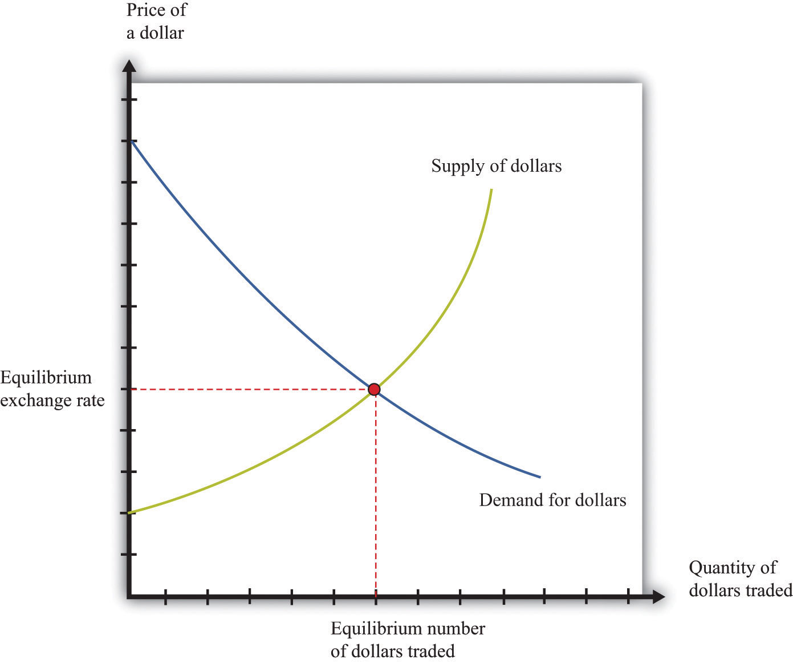Currencies are traded in foreign exchange markets, such as the market shown here in which dollars are bought and sold.
After you have read this section, you should be able to answer the following questions:
In Section 19.3 "Three Important Markets", we talked about the markets for credit, labor, and foreign exchange. We explained that we sometimes look at individual examples of these markets and sometimes at versions of these markets that apply to the economy as a whole.
But the story of the economic crisis in 2008 was not about a single market. Instead, what started as a problem in the US mortgage market was felt in the housing market in England, the labor market in China, the foreign exchange market in Europe, and many other markets. These different markets are connected; in this section, we explore these linkages. We do so through the circular flow of income, shown in Figure 19.16 "The Circular Flow of Income". That model of the economy reveals the linkages across markets that the global financial crisis made so evident.
Toolkit: Section 31.27 "The Circular Flow of Income"
You can review the circular flow of income in the toolkit.
Figure 19.16 The Circular Flow of Income
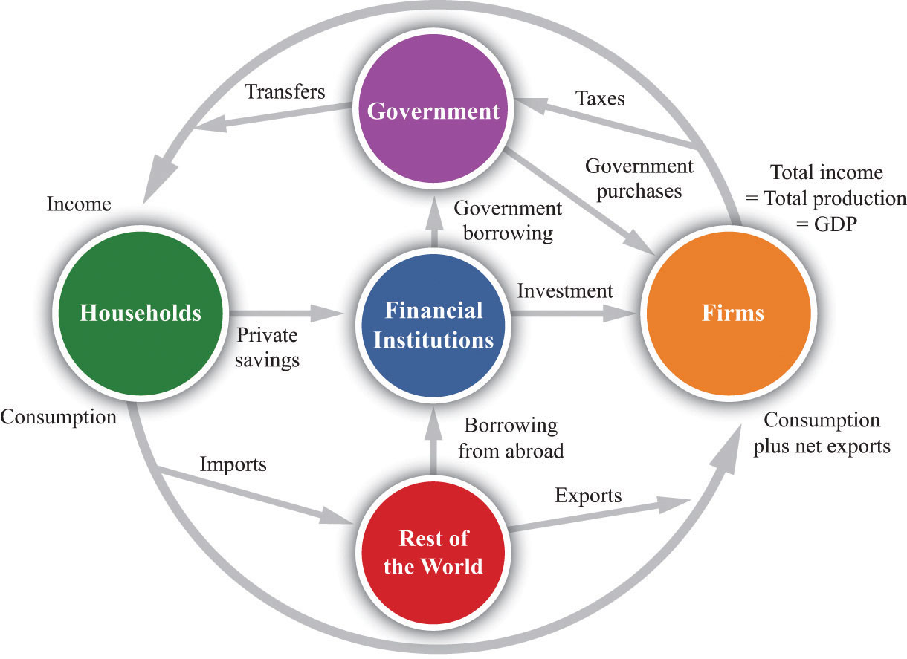We know from the circular flow that the production of goods and services generates income in an economy. Some of that income is paid to the government in the form of taxes, but the rest finds its way to households. Much of the flow of dollars from firms to households takes place through the labor market because firms demand labor to produce goods. If firms are producing large quantities of goods and services, then they demand lots of labor, and income from the sale of labor services in the economy is high.
Some of the income that households earn from selling labor services is saved. There is therefore a link, through the household sector, between the labor market and the credit market. So we can follow a connection from the production of goods and services to the supply of credit: if firms produce more, they generate more labor income, so there is more saving supplied by households to the credit market. There is also a link from the markets for goods and services to the demand for credit: firms borrow to purchase investment goods.
These markets are also linked—directly or indirectly—to foreign exchange markets. Whenever firms purchase imported goods, such as oil, this generates a demand for foreign exchange. When firms expand output, demand more labor, and so generate additional household income, households spend some of this income on imports, again generating a demand for foreign exchange. When households and firms in other countries want to buy our goods and services, that generates a supply of foreign exchange. And many transactions in credit markets also generate a demand for or supply of foreign exchange.
We could go on, but the point should be clear: the markets in every economy are intimately interconnected. This has a critical implication for our study of macroeconomics, which is that it both complicates and enriches our comparative static analyses. When a shift in supply or demand in one market affects the equilibrium price and quantity in that market, there are changes in other markets as well.There is a second, more abstract implication: we have to worry about whether all the markets in the economy are in equilibrium at the same time. In our analyses, we have looked at only one market at a time. But we now know that the outcome in one market (for example, the real wage) can affect supply and demand in other markets (for example, the supply of credit). In advanced studies in economics, we use complicated mathematics to see if there are prices that are consistent with all the markets being in equilibrium at once. The bottom line is good news: we can usually be confident that there is an equilibrium for all markets. But because this is such an advanced area of economics, we do not worry about it further in this book. In this section, we show how these interactions across markets help us understand the propagation of the 2008 crisis from the US housing market to the economies of the world. We have already hinted at some of these linkages, but now we make them more explicit.
The story began with the first comparative static example that we looked at: a leftward shift in demand for housing. Potential buyers of houses started worrying that the future price of houses would decrease. This made people more reluctant to buy houses. Meanwhile, a tightening of lending standards made it harder for people to obtain loans. Both of these caused the demand for housing to shift leftward. Part (a) of Figure 19.17, which we already saw earlier in the chapter, shows us that this led to a decrease in both the price and the quantity of houses.
Figure 19.17
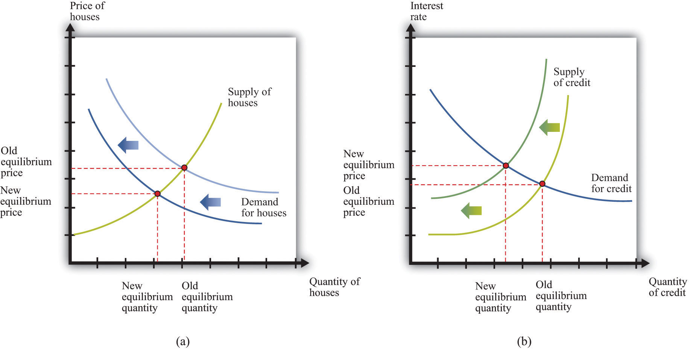A decrease in demand for housing led to a decrease in supply of credit. (a) Worsening expectations about future house prices, together with tighter lending conditions, led to a decrease in demand for housing. (b) In the credit market, banks and other lending institutions found themselves with bad debt, so the supply of credit decreased.
Part (b) of Figure 19.17 also appeared earlier in the chapter. The decrease in housing prices, combined with the complicated way in which mortgages had been sold and resold by financial institutions, meant that many financial institutions found themselves in trouble. Some went bankrupt. This made financial institutions cautious about lending to each other, so the supply of credit shifted to the left. Interest rates rose. (Interest rates in the crisis were also affected by the actions of the US Federal Reserve and other monetary authorities around the world.We discuss such policies in detail when we return to the crisis in Chapter 30 "The Global Financial Crisis".)
If you run a business, you often have to rely on credit (loans) to finance the purchase of your inputs into the production process. For example, suppose you run a boutique clothing store. You have to buy the clothes to put on display first, and you get your revenues only when you sell the clothes. Weeks or even months may pass between the time you incur your costs and the time you get your revenues. Unless you have the funds available to buy all your stock up front, you will need to borrow. The same is true in many other businesses. Firms regularly take out short-term loans to pay for some of their costs of operation.
When interest rates increase, businesses see their costs increase. Higher costs make it less profitable to produce at any given price, so most businesses cut back on their production. Some may even leave the market altogether. As a consequence, the supply curve for most goods and services shifts leftward, as shown in Figure 19.18. We see that the equilibrium price increases, and the equilibrium quantity decreases. Going back to an individual producer, what does this mean? The producer sees costs increase. In the new equilibrium, the producer also obtains a higher price. However, the increase in price is not as big as the increase in cost.
Figure 19.18
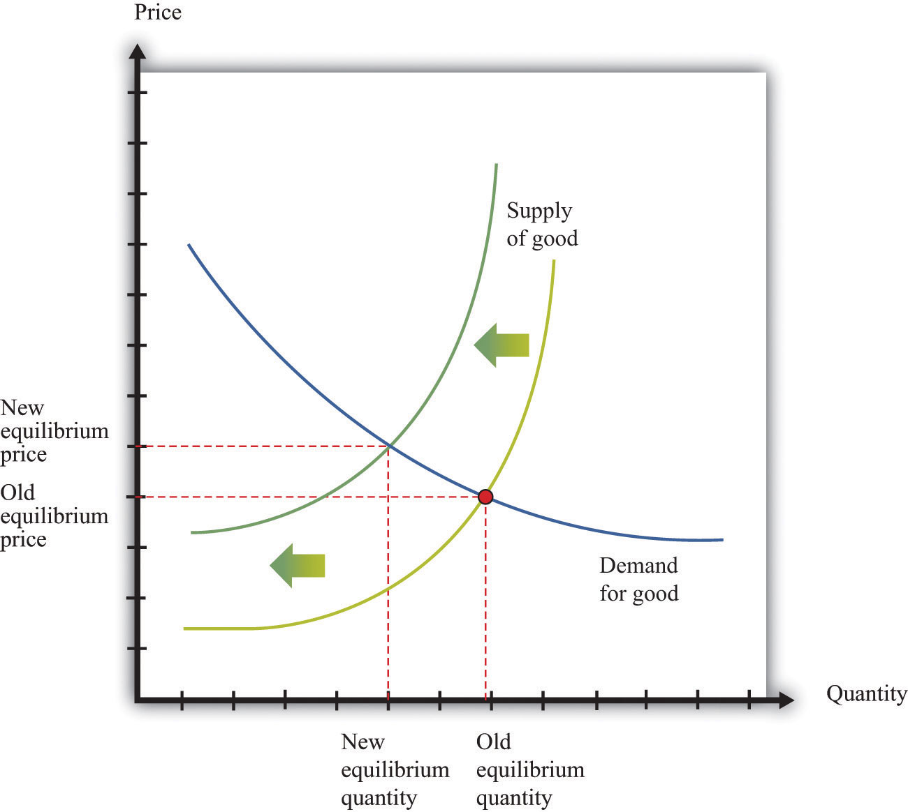Higher interest rates lead to higher prices and lower quantities for most goods and services. Higher interest rates increase the cost of doing business, so the supply curve for a typical good or service shifts leftward.
The effect of the higher interest rates on the output decisions of firms also leads them to demand less of all their inputs, including labor. Decreases in production lead to decreases in labor demand, as shown in Figure 19.19 "A Decrease in Demand for Labor". In turn, decreases in wages and employment (more generally, a decrease in income) lead to decreased demand for goods.
Figure 19.19 A Decrease in Demand for Labor
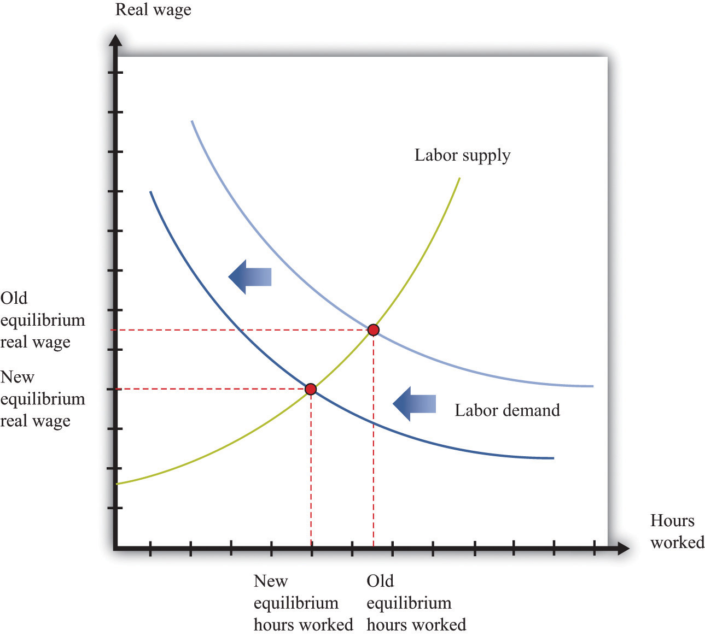A decrease in demand for labor causes the labor demand curve to shift leftward.
Notice the connection back and forth between households and firms. As firms reduce their demand for labor services, less income flows to households. This reduction in income leads to a reduction in the demand for goods and services, leading firms to reduce output and employment even further. The interaction between income and spending on goods and services can lead to much larger reductions in output and employment than the original shift in demand in the original market (in this case, the housing market). This means that Figure 19.18 does not tell the whole story of goods markets. That figure shows the effects of interest rates on the supply of goods but does not include the reduction in demand stemming from the interaction of income and spending in the circular flow. Figure 19.20 completes the story by adding the shift in demand.
Figure 19.20
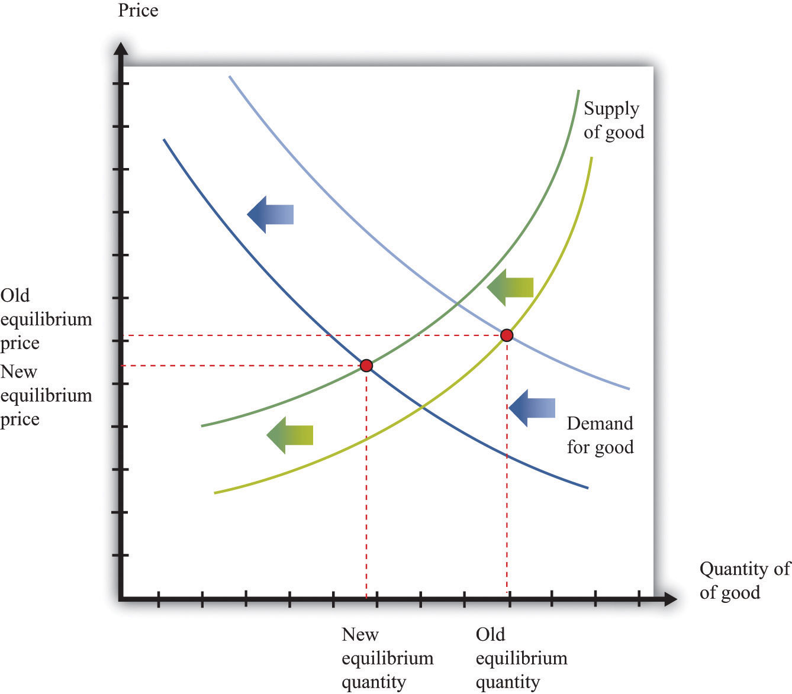Higher interest rates lead to a leftward shift in supply, and lower income leads to a leftward shift of demand, resulting in lower quantities for most goods and services. Higher interest rates increase the cost of doing business. Lower income decreases the demand for goods and services.
The following from 2008 story illustrates such a connection across markets.
From fewer shoe shines to a slowdown in corporate art purchases, subtle bellwethers can help take the temperature of business activity.
Nelson Villanova doesn’t need to watch the stock market indexes…or gross domestic product to gauge the health of the economy. He just has to look down. If he sees scuffed shoes, then he knows things are bad.
Villanova, general manager of Eddie’s Shoe Repair in New York’s Grand Central Terminal, has seen business drop 25% to 30% since August. The 15-year-old company employs 40 people across five locations in the sprawling train station, shining and repairing shoes and luggage. But lately, selling $4 shines seems to be as hard as unloading mortgage-backed securities.
[…]John Tozzi, “How to Tell Business Is Cutting Back,” Bloomberg BusinessWeek, October 21, 2008, accessed June 28, 2011, http://www.businessweek.com/smallbiz/content/oct2008/sb20081020_372369.htm?chan=top$+$news_top+news+index+-+temp_small+ business.
Figure 19.21 "A Decrease in Demand for Shoeshines" shows the shoeshine market. Traders working on Wall Street started purchasing fewer shoeshines. This was not because shoeshines became more expensive. Rather, it was a shift in the demand for shoeshines because these traders saw that their incomes were decreasing.
Figure 19.21 A Decrease in Demand for Shoeshines
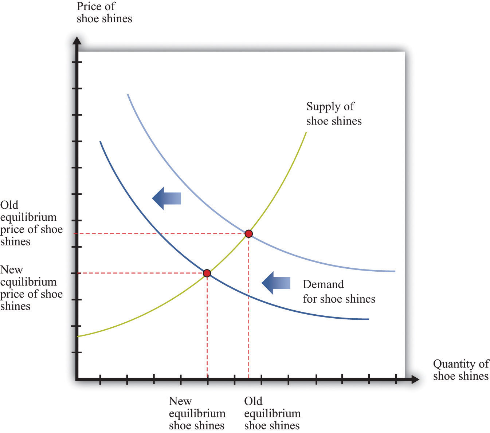A decrease in income leads to a decrease in demand (a leftward shift) for shoeshines.
One of the excerpts we used to introduce this chapter touched on the effects of the crisis on exports from China. We now broaden our discussion to include those effects as well. Looking back at Figure 19.19 "A Decrease in Demand for Labor", recall that part of household spending goes toward the purchase of goods and services produced in other countries. A significant fraction of imports to the United States come from China. China also sells goods and services to Japan, Europe, and most of the world.
When demand from these economies slumps, as it did in 2008, exports from China also decrease. Since exports are a part of overall spending, this leads firms in China to cut back their production and employment. Thus the Chinese economy was also slowed down by the effects of the financial crisis.
The reduced demand for imports has another effect. Because the demand for foreign currency is partly motivated by the desire to buy goods from that country, a decrease in the import of Chinese goods to the United States and other countries leads to a decrease in demand for the Chinese yuan. There is a leftward shift in the demand for that currency and thus a lower price in dollars. (As with all comparative static exercises, this assumes that nothing else is changing to offset these effects on the demand for the yuan.)
The current account balanceThe difference between the value of exports and imports of goods and services plus net income from foreign assets. is (roughly speaking) the difference between the value of exports and imports of goods and services. A country has a current account surplus if the value of exports of goods and services exceeds the value of its imports. A country has a current account deficit if the value of imports of goods and services exceeds the value of its exports. Looking at the United States and China, one sees very different behavior for the current account.This discussion draws on data from the International Monetary Fund. See Stephan Danninger and Florence Jaumotte, “Divergence of Current Account Balances across Emerging Economies,” World Economic Outlook, Chapter 6, accessed June 28, 2011, http://www.imf.org/external/pubs/ft/weo/2008/02/pdf/c6.pdf. In recent years, the United States has run a current account deficit of nearly 5 percent of its gross domestic product (GDP). China, in contrast, has run a current account surplus of about 6.1 percent of its GDP since 2002.
The reduced demand for imports from China has an effect on the current account balance of China. We would expect to see a reduction in the current account surplus of China due to the reduction in economic activity of its trading partners.
You might also wonder how the persistent deficits of the United States are paid for. When a country runs a current account deficit, it is borrowing from other countries. This is just like a household that pays for consumption above its income by means of borrowing. The rules of national income accounting tell us that the flows in and out of each sector must always be in balance. If we look at the flows in and out of the foreign sector we see that
borrowing from abroad = imports − exports or lending to abroad = exports − imports.Net exportsExports minus imports. (sometimes called the trade surplus) equal exports minus imports. So lending to other countries equals net exports.
The circular flow of income tells us something powerful: whenever we import more than we export, we must, on net, be borrowing from abroad. On reflection, this is not so surprising. Other countries are giving us more goods and services than we are giving to them. This is not done out of generosity; they do so because they expect to be repaid at some point in the future. If we export more than we import, then this flow goes in the other direction, and we are lending to abroad.
Both China and the United States trade with many other countries, so this pattern of trade holds true bilaterally (that is, between them) as well. China has run systematic current account surpluses with the United States, meaning that China is lending to the United States. Those loans take many forms, with commentators highlighting Chinese purchases of US government debt. US Secretary of State Hilary Clinton alluded to this connection between the two economies during a visit to China in early 2009.
US Secretary of State Hillary Clinton yesterday urged China to keep buying US debt as she wrapped up her first overseas trip, during which she agreed to work closely with Beijing on the financial crisis.
[…]
By continuing to support American Treasury instruments the Chinese are recognizing our interconnection…“Keep Buying US Treasury Bills, Clinton Urges China,” Taipai Times, February 23, 2009, accessed June 28, 2011, http://www.taipeitimes.com/News/front/print/2009/02/23/2003436802.
The crisis began with a reduction in the demand for houses and a consequent decrease in the value of houses. This reduced the value of assets, particularly mortgage-backed securities, and meant that the supply of credit in the economy shifted inward. The consequence was higher interest rates and reduced credit. Since many firms in the economy borrow to finance production, the increased interest rates increased their marginal costs of production. Supply curves throughout the economy shifted inward, leading to lower output. Firms needed fewer workers, so there was a reduction in employment.
The spread to other countries came through a couple of avenues. First, households and firms in other countries were one source of credit to the US economy. When asset prices decreased, the portfolios of foreign banks were also adversely affected. This led to higher interest rates and lower output in those countries. In addition, as the US economy went into recession, it purchased fewer imports from other countries. This led to lower production in those countries.
Our description of the crisis is of necessity a simple one. We have neglected many details, and we have not discussed how government policies also affected interest rates and the demand for goods and services. Later chapters in the book provide more tools for understanding these aspects of the crisis, so when we return to the topic in Chapter 30 "The Global Financial Crisis", we can provide a more complete analysis of the crisis.
The supply-and-demand framework is almost certainly the most powerful model in the economist’s toolkit. Armed with an understanding of this framework, you can make sense of much economic news, and you can make intelligent predictions about future changes in prices.
A true understanding of this framework is more than just an ability to shift curves around, however. It is an understanding of how markets and prices are one of the main ways in which the world is interlinked. Markets are, quite simply, at the heart of economic life. Markets are the means by which suppliers and demanders of goods and services can meet and exchange their wares. Since exchange creates value—because it makes both buyers and sellers better off—markets are the means by which our economy can prosper. Markets are the means by which economic activity is coordinated in our economy, allowing us to specialize in what we do best and to buy other goods and services.
Economists regularly point to these features of markets, but this should not blind us to the fact that markets can go wrong. There are many ways in which market outcomes may not be the most desirable or efficient, as the global financial crisis revealed. In the remainder of this book, we look in considerable detail at all the ways that markets can fail us as well as help us.
Fill in the blanks in the following table. What can you say about the missing price in the table?
Table 19.2 Individual and Market Demand
| Price of Chocolate Bar | Household 1’s Demand | Household 2’s Demand | Market Demand |
|---|---|---|---|
| 1 | 7 | 22 | |
| 2 | 11 | 16 | |
| 10 | .5 | 3 | 3.5 |
| .75 | 4 | 4.75 |
What happens to the value of the US dollar if
Economics Detective
Spreadsheet Exercise
Using a spreadsheet, construct a version of Table 19.1 "Market Equilibrium: An Example" assuming that
market demand = 50 − 0.005 × price.Fill in all the prices (in thousands) from 1,000 to 100,000. What is the equilibrium price and quantity in the market? How would you explain the difference between this equilibrium and the one displayed in Table 19.1 "Market Equilibrium: An Example"?